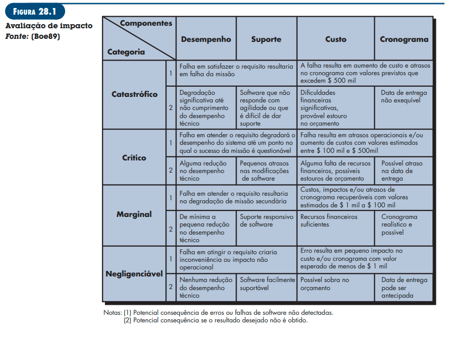
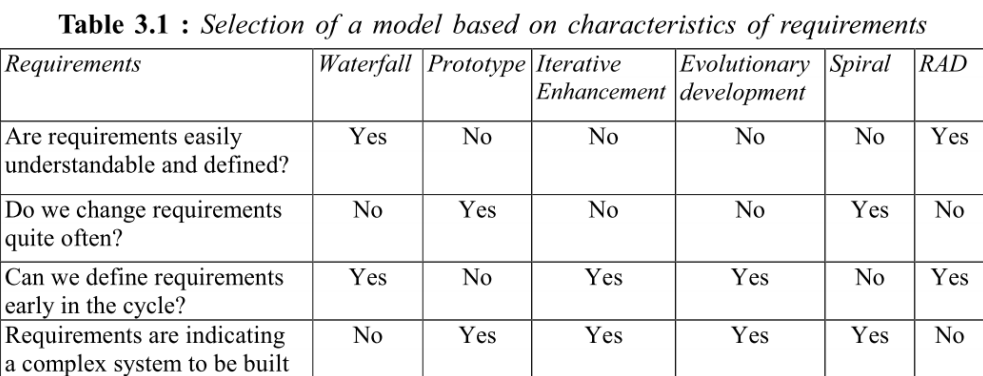
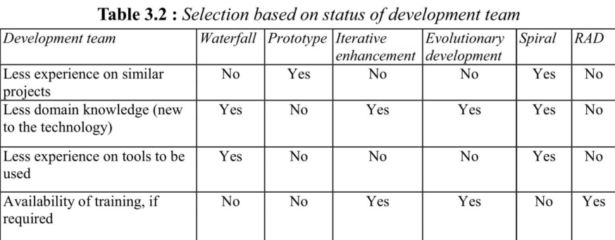
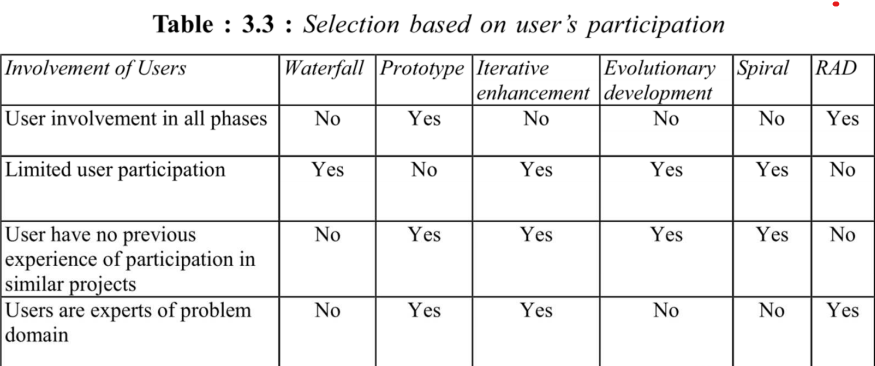
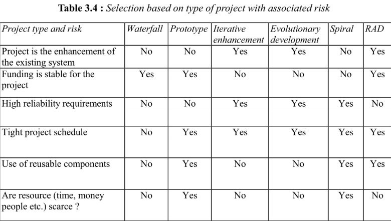
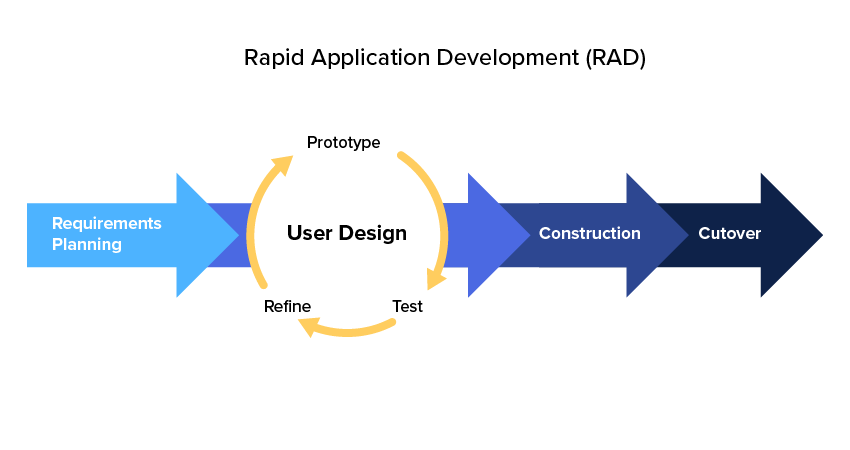
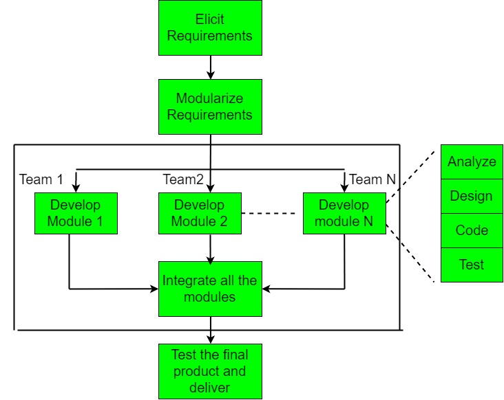

VISÃO DO PRODUTO E PROJETO
Historico de revisão
| Data | Versão | Descrição | Autor | Revisores |
|---|---|---|---|---|
| 24/04/23 | 1.0 | Criação do documento | Juan | ? |
| 25/04/23 | 1.1 | Finalização do documento | Juan | ? |
1 VISÃO GERAL DO PRODUTO
1.1 Problema
O problema se sustenta sobre a falta de meios organizados para realização de caronas solidárias, devido a diversos grupos e situações que podem acontecer quando os usuários (motoristas e passageiros) tentam encontrar caronas solidárias através desses meios.
Para se entender melhor o problema, foi utilizada a técnica diagrama de ishikawa, também chamado de diagrama da espinha de peixe, com o auxílio da técnica 5 porquês para encontrar as causas raízes e seus principais motivadores. Assim, foram encontradas 4 causas raízes: Tempo do usuário, valor do produto, informação dos usuários e centralização das informações.

1.2 Declaração de Posição do Produto
| Para | Alunos da FGA |
|---|---|
| Quem | Precisa de carona solidária e não possui meios organizados para encontrá-la ou ofertá-la |
| O UniBuddy | É um sistema de organização de caronas solidárias |
| Que | Auxílio na organização de caronas solidárias, ofertando possibilidade de encontrar pessoas que ofereçam ou precisem receber a carona para determinado local |
| Ao contrário | Passe-livre, Grupos de carona no WhatsApp, Telegram ou afins |
| Nosso produto | Ofertará caronas solidárias acessíveis e organizadas |
1.3 Objetivos do Produto
O objetivo do UniBuddy é auxiliar, de forma organizada e prática, no encontro entre motoristas dispostos a oferecer carona solidária e passageiros que precisam recebê-las. Isso será feito através de uma aplicação que se nutre a partir dos dados dos usuários para disponibilzar como informações úteis e organizadas para os interessados em utilizá-las para encontrar parceiros com o mesmo destino e de confiança.
1.4 Tecnologias a Serem Utilizadas
- React Native
- Javascript
- Node.js
- ?
2 VISÃO GERAL DO PROJETO
2.1 Organização do Projeto
| Papel | Atribuições | Responsável | Participantes |
|---|---|---|---|
| Desenvolvedor | Codificar o produto, realizar refatoração | ? | João, Juan, Leonardo, Pedro Henrique, Pedro Lucas |
| Dono do Produto | Atualizar o escopo do produto, organizar o escopo das sprints, validar as entregas | ? | João, Juan, Leonardo, Pedro Henrique, Pedro Lucas |
| Mestre do Scrum | Delegar tarefas, duração da sprint e sprint review | ? | João, Juan, Leonardo, Pedro Henrique, Pedro Lucas |
2.2 Planejamento das Fases e/ou Iterações do Projeto
| Sprint | Produto (Entrega) | Data Início | Data Fim |
|---|---|---|---|
| Sprint 1 | ? | ? | ? |
| Sprint 2 | ? | ? | ? |
2.3 Matriz de Comunicação
| Descrição | Área/Envolvidos | Periodicidade | Produtos Gerados |
|---|---|---|---|
| Daily | Equipe do Projeto | Diário | Relato por parte dos membros da equipe no WhatsApp sobre o andamento individual das partes do projeto |
| Sprint Planning | Equipe do Projeto e Dono do Produto | Semanal | Relatório Sprint Planning, Planejamento do que será feito no ciclo da Sprint |
| Sprint Review | Equipe do Projeto e Dono do Produto | Junto ao Sprint Planning | Relatório Sprint Review, Validação do Produto |
| Retrospectiva | Equipe do Projeto | Semanalmente | Tabela de check com uma verificação da implementação |
| Comunicar a situação do projeto | Equipe do Projeto e Professor | Mensalmente | Apresentações da Entrega de cada Unidade |
2.4 Gerenciamento de Riscos
A análise e gerenciamento de riscos referem-se à identificação dos possíveis pontos que podem representar riscos para o projeto. Precisam ser acompanhados, a cada sprint, se referindo assim, ao projeto como um todo e não apenas ao produto.
Segundo Charette, existem três tipos de riscos de Software (PRESSMAN,2006): Riscos de projeto mostram problemas potenciais de orçamento, cronograma, organizacionais que impactam o projeto. (PRESSMAN,2006) Riscos técnicos perturbam a qualidade e a entrega do software. Também mostram problemas potenciais de projeto, implementação, interface, verificação e manutenção. (PRESSMAN,2006) Riscos de negócio ameaçam a viabilidade do software e do produto. Existem cinco principais riscos de negócios que são: (1) criar um excelente produto ou sistema que ninguém realmente quer (risco de mercado), (2) criar um produto que não se encaixe mais na estratégia geral de negócios da empresa (risco estratégico), (3) criar um produto que a equipe de vendas não sabe como vender (risco de vendas), (4) perda de suporte da alta gerência devido à mudança no foco ou mudança de profissionais (risco gerencial), e (5)perda do orçamento ou do comprometimento dos profissionais (riscos de orçamento). (PRESSMAN,2006)

2.4.1 Histórico de Riscos
| Sprint | Risco Encontrado | Nível |
|---|---|---|
| ? | ? | ? |
2.5 Critérios de Replanejamento
Os critérios de replanejamento referem-se à identificação dos pontos que, caso ocorram, causarão um replanejamento do projeto. Precisam ser acompanhados a cada sprint, referindo-se assim, ao projeto como um todo e não apenas ao produto.
- Alteração nos prazos das entregas da Disciplina ou do Cliente
- Alteração das ferramentas do projeto
- Alteração no Processo de Engenharia de Requisito ou Desenvolvimento de Software
- Saída de algum membro da equipe
| Sprint | Solução Encontrada | Resultado Esperado |
|---|---|---|
| ? | ? | ? |
Os critérios de replanejamento do projeto devem ser acompanhados e atualizados a cada ciclo. E, aplicados, conforme necessidade.
3 PROCESSO DE DESENVOLVIMENTO DE SOFTWARE
3.1 Metodologia
Baseado na proposta do Gupta (2019), foi respondido um conjunto de questões distintas sobre determinados tópicos para definir a abordagem que melhor se encaixa ao projeto e time. Tópicos norteadores: 1. Requisitos 2. Equipe de Desenvolvimento 3. Usuários 4. Tipo de Projeto e Riscos Associados
3.1.1 Requisitos

| Pergunta | Nosso contexto |
|---|---|
| Os requisitos são fáceis de entender e definir? | Sim. |
| Nós mudamos os requisitos com bastante frequência? | Não. |
| Nós podemos definir os requisitos ao início de cada ciclo? | Sim. |
| Os requisitos estão indicando um sistema complexo para se construir? | Sim. |
Conclusão: Em termos de requisitos, temos o indicativo para o RAD e Desenvolvimento Evolutivo.
3.1.2 Equipe de Desenvolvimento

| Pergunta | Nosso contexto |
|---|---|
| Pouca experiência em projetos similares? | Sim. |
| Pouco conhecimento de domínio (novato na tecnologia)? | Não. |
| Pouca experiência com as ferramentas que serão usadas? | Sim. |
| Disponibilidade para treinamento, se necessário | Sim. |
Conclusão: Em termos de equipe de desenvolvimento, temos o indicativo para o Spiral e o RAD.
3.1.3 Usuários

| Pergunta | Nosso contexto |
|---|---|
| Usuário está envolvido em todas as fases? | Sim. |
| Participação limitada do usuário? | Não. |
| Usuário não tem experiência anterior em participação em projetos similares? | Não. |
| Usuário são especialistas no domínio do problema? | Sim. |
Conclusão: Em termos de usuário, temos o indicativo para o RAD e Protótipo
3.1.4 Tipo de Projeto e Risco Associado

| Pergunta | Nosso contexto |
|---|---|
| O projeto é melhoria de um sistema existente? | Não. |
| O financiamento está estável para o projeto? | Sim. |
| Requisitos de alta confiabilidade? | Não. |
| Cronograma do projeto é apertado? | Sim. |
| Uso de componentes reutilizáveis? | Sim.image.png |
| Os recursos (Tempo, dinheiro, pessoas etc) estão escassos? | Sim. |
Conclusão: Em termos de Tipo de Projeto e Risco Associado, temos o indicativo para o Protótipo e RAD
3.1.5 Escolha do Processo de Desenvolvimento de Software

Considerando o foco principal no nosso usuário, a pouca experiência dos membros da equipe e o risco associado, entendemos que devemos utilizar o método ágil de desenvolvimento RAD (Rapid Application Development) (SWEBOK, p. 170).
3.2 Ferramentas
Para a execução dessa metodologia, escolheu-se as seguintes Ferramentas de organização e controle da equipe:
- Gerenciamento de tarefas: GitHub Projects
- Comunicação: WhatsApp e Teams
- Versionamento: GitHub
3.3 Processos e Procedimentos

3.3.1 Requisitos e Planejamento
3.3.1.1 ELICITAÇÃO DE REQUISITOS
| Identificador | Atividade | Método | Ferramenta | Entrega |
|---|---|---|---|---|
| ELI-01 | ? | ? | ? | ? |
3.3.2.1 GERENCIAMENTO DE REQUISITOS
| Identificador | Atividade | Método | Ferramenta | Entrega |
|---|---|---|---|---|
| GEREN-01 | ? | ? | ? | ? |
3.3.2 Descrição do Usuário
3.3.2.1 DOCUMENTAÇÃO DE REQUISITOS
| Identificador | Atividade | Método | Ferramenta | Entrega |
|---|---|---|---|---|
| DOC-01 | ? | ? | ? | ? |
3.3.2.2 ANÁLISE E NEGOCIAÇÃO DE REQUISITOS
| Identificador | Atividade | Método | Ferramenta | Entrega |
|---|---|---|---|---|
| ANA-01 | ? | ? | ? | ? |
3.3.2.3 PROTOTIPAÇÃO
| Identificador | Atividade | Método | Ferramenta | Entrega |
|---|---|---|---|---|
| PRO-01 | ? | ? | ? | ? |
3.3.3.3 IMPLEMENTAÇÃO
| Identificador | Atividade | Método | Ferramenta | Entrega |
|---|---|---|---|---|
| IMP-01 | ? | ? | ? | ? |
3.3.3 Construção
3.3.3.1 VALIDAÇÃO DE REQUISITOS
| Identificador | Atividade | Método | Ferramenta | Entrega |
|---|---|---|---|---|
| VAL-01 | ? | ? | ? | ? |
3.3.4 Cutover
3.3.4.1 VERIFICAÇÃO DE REQUISITOS
| Identificador | Atividade | Método | Ferramenta | Entrega |
|---|---|---|---|---|
| VER-01 | ? | ? | ? | ? |
3.4 Arquitetura do Projeto
?
4 LIÇÕES APRENDIDAS
Unidade 1
?
5 A MELHORAR
Unidade 1
?
6 REFERÊNCIAS BIBLIOGRÁFICAS
- https://www.atlassian.com/br/agile/scrum/roles#:~: texto%20 Scrum%20 tem%20 tr%C3%AAs%20 pap%C3%A9is,membros%20da%20 equipe%20de%20desenvolvimento
- Raja Gupta. Fundamentals of Software Engineering. Engineering Handbook. 2019